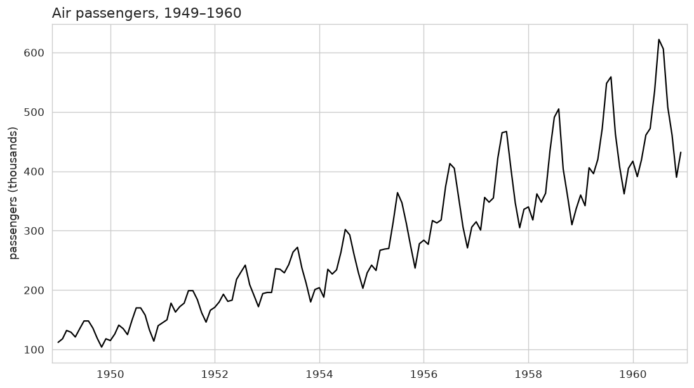
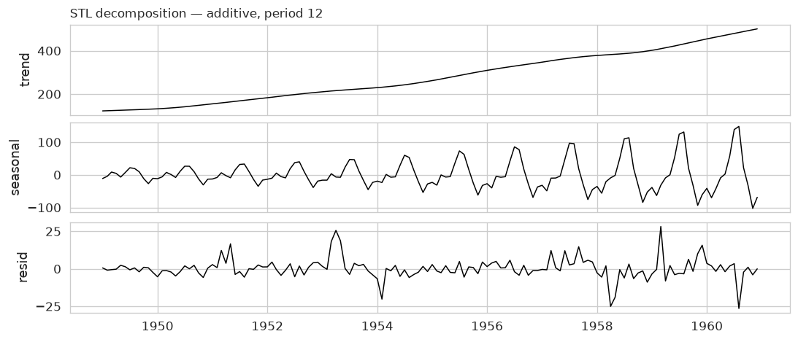
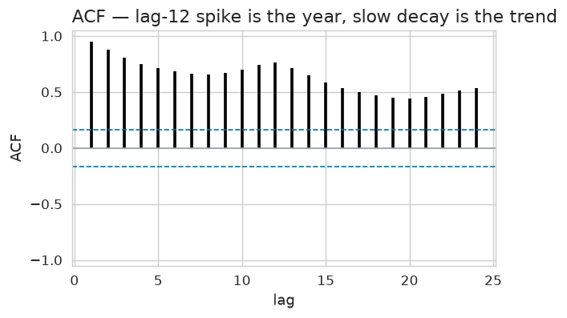
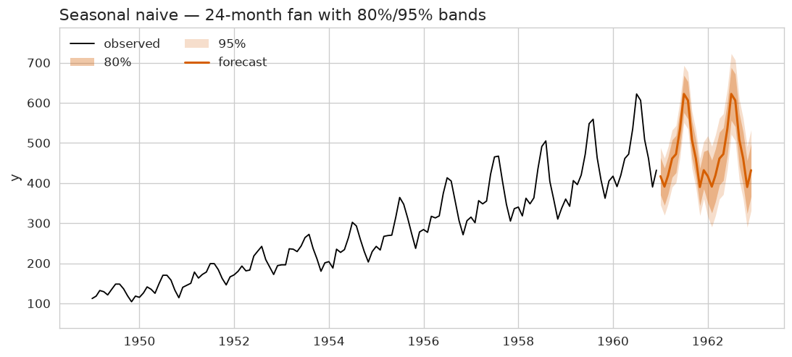
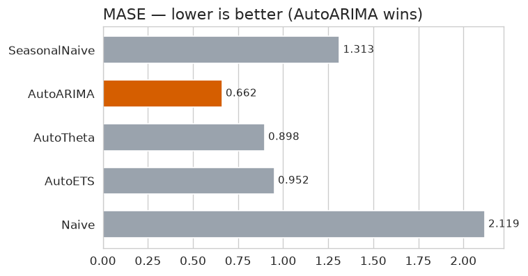
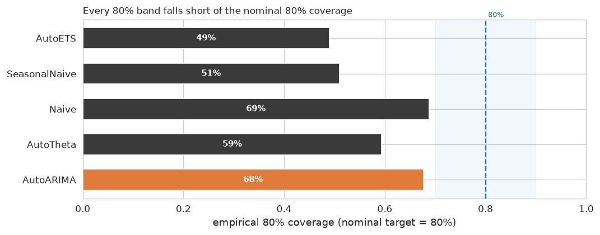

The full course pipeline on the Box & Jenkins AirPassengers series (1949–1960): diagnose it, set a benchmark floor, shortlist through the framework, judge over eight rolling origins, and report — for a manager who never opens the notebook.
Every number below comes out of one place: the rolling-origin harness — eight folds, twelve months each, step twelve — with each fold's error scaled against only the history that fold was allowed to see. No single holdout is used as evidence for a ranking.
| Model | MASE ↓ | RMSSE ↓ | Scaled CRPS ↓ | 80% coverage |
|---|---|---|---|---|
| SeasonalNaive the floor | 1.31 | 1.25 | 0.062 | 0.51 |
| AutoARIMA ship this | 0.66 | 0.70 | 0.034 | 0.68 |
| AutoTheta | 0.90 | 0.99 | 0.046 | 0.59 |
| AutoETS | 0.95 | 1.00 | 0.050 | 0.49 |
| Naive benchmark | 2.12 | 2.45 | 0.110 | 0.69 |
Naive's higher coverage (0.69) is not a win — its MASE of 2.12 makes the band wide enough to catch anything and tell nothing.
Twelve years of monthly growth with no gaps: the level rises roughly exponentially, and the size of the yearly swing grows with the level, so the seasonality is multiplicative. There is a clear annual cycle peaking in the northern-hemisphere summer, and a small residual that does not repeat the same way twice.



The seasonal naive is the first model on any series — the thing everything else has to beat. Its residuals are y_t − y_{t-12}, what repeating last year leaves on the table. Ljung-Box rejects white noise at lags 12 and 24 with p-values near 10⁻⁴³: the floor leaves real structure behind, mostly the trend and the multiplicative growth it cannot represent.

Before the harness, AutoGluon fit a zoo of five models (Naive, SeasonalNaive, AutoETS, AutoARIMA, Theta) plus an ensemble it added itself, on a single 12-month holdout. The leaderboard's score_val is negative because AutoGluon stores the negated MASE so that larger-is-better; it scored six models on one internal split. So that table could shortlist candidates but could not rank AutoARIMA ahead of Theta by the 0.05 MASE that separated them — one window is not a ranking. The rolling-origin harness turns the shortlist into a ranking, and confirms it: AutoARIMA first, the floor last, the trend-aware models between.
The harness confirms the leaderboard's shortlist and then moves it. AutoARIMA beats the floor on all three metrics — MASE, RMSSE, and scaled CRPS — so it wins the point forecast and the distribution. AutoTheta and AutoETS also beat the floor on point forecast and CRPS, so every real model in the zoo beats the seasonal naive.
But the distribution half is a loss for all of them: the floor's 80% band covers only 51% of held-out points; AutoARIMA reaches 68% and AutoTheta 59% — closer to nominal, but still short of 80%. The honest verdict: AutoARIMA wins on accuracy; every band is too narrow; none is yet honest.


AutoARIMA's 80% band is about 44,000 passengers wide on average (around a mean level of 280,000), narrower than the floor's 78,000 — and yet it covers better, 68% vs 51%. That is the band doing two things at once: a sharper, better-centred forecast and a tighter band. Both numbers are honest because they are measured on held-out folds the model never trained on.
But the verdict is not yet honest at the nominal level: 68% is short of the 80% the band claims. The band is well-shaped but under-calibrated — right on average, wrong on width.
What AutoARIMA still misses is the distribution: its 68% coverage says the residuals are not yet the well-behaved, symmetric noise a calibrated interval assumes. The point forecast is good; the uncertainty around it is still too narrow — the symptom of a band fit to residuals that are slightly under-dispersed relative to what actually lands outside them.